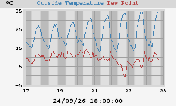

Temperatura exterior
24h Temperatura

- Mínima hoy: 20,0°C at 07:14:48
- Máxima hoy: 26,4°C at 09:49:54
7 días Temperatura

- Mínima esta semana: 16,1°C at 07:26:11 (lunes)
- Máxima esta semana: 39,3°C at 17:27:27 (miércoles)
